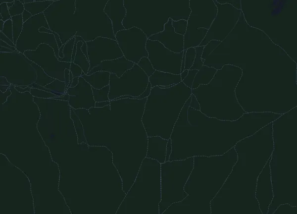

Härnö Trail Kort 7 km
- Distanz
- 7 km
- Höhenmeter
- ↑ 185 m
- Höchster Punkt
- 174 m ü. M.
- Untergrund
- Trail und Gelände
- Profil
- Hügelig
- Verpflegungsstellen
- 2
Höhenprofil
Mit Mila vorbereiten
Mila ist eine Lauf-Coach-App. Nimmst du einen Lauf in deinen Plan auf, plant der Coach deine Wochen bis zum Start nach deiner Form und gibt dir eine Zielzeitprognose und einen Plan für Tempo, Getränke und Verpflegung auf der Strecke.

Der richtige Lauf am richtigen Tag.
Die Strecke

Über die Strecke
Härnö Trail Kort 7 km ist ein Traillauf in Härnösand, Schweden, über 7 km. Die Strecke hat insgesamt 185 Höhenmeter bergauf und 185 bergab, 27 m pro km, und ist damit hügelig. Der höchste Punkt liegt auf 174 m ü. M., der tiefste auf 95 m.
Der größte Anstieg beginnt bei km 2,9: 41 Höhenmeter auf 1,4 km mit durchschnittlich 3,0 % Steigung, bis auf 144 m. Insgesamt hat die Strecke 3 Anstiege ab 25 Höhenmetern; der letzte beginnt bei km 5,5.
Der Veranstalter nennt 2 Verpflegungsstellen, die erste bei km 3,5 und die letzte bei km 4,8.
In der Mila-App beschreibt der Coach die Strecke ausführlich in deiner Sprache und plant dein Pacing und deine Verpflegung dafür.
Anstiege
| Beginnt bei | Länge | Höhenmeter | Steigung | Gipfel (m ü. M.) |
|---|---|---|---|---|
| km 2,0 | 760 m | 31 m | 4,1 % | 138 |
| km 2,9 | 1,4 km | 41 m | 3,0 % | 144 |
| km 5,5 | 780 m | 26 m | 3,4 % | 158 |
Vor dem Start
Verpflegungsstellen
| Bei | Angebot |
|---|---|
| km 3,5 | Wasser, Sportgetränk, Essen |
| km 4,8 | Wasser, Sportgetränk, Essen, Salz |
Pace-Tabelle
Härnö Trail Kort 7 km in 35:00 – Pace pro km und Zwischenzeiten
5:02 pro km · km 2,5: 12:35 · km 5: 25:11 · Ziel: 35:00
Härnö Trail Kort 7 km in 40:00 – Pace pro km und Zwischenzeiten
5:45 pro km · km 2,5: 14:23 · km 5: 28:47 · Ziel: 40:00
Härnö Trail Kort 7 km in 50:00 – Pace pro km und Zwischenzeiten
7:12 pro km · km 2,5: 17:59 · km 5: 35:58 · Ziel: 50:00
Härnö Trail Kort 7 km in 55:00 – Pace pro km und Zwischenzeiten
7:55 pro km · km 2,5: 19:47 · km 5: 39:34 · Ziel: 55:00
Die Zeiten setzen ein gleichmäßiges Tempo auf der ganzen Strecke voraus. Das ist reine Rechnung, keine Prognose: an Anstiegen, im Gedränge und an Verpflegungsstellen schwankt das Tempo.
Häufige Fragen
Wann findet Härnö Trail Kort 7 km statt?
Härnö Trail Kort 7 km findet am Samstag, 2. Oktober 2027 statt (vorläufiges Datum). Prüfe Datum und Startzeit beim Veranstalter.
Wie lang ist Härnö Trail Kort 7 km und wie viele Höhenmeter hat die Strecke?
Der Lauf ist 7 km lang mit 185 Höhenmetern bergauf und 185 bergab. Der höchste Punkt liegt auf 174 m ü. M.
Wie ist die Strecke von Härnö Trail Kort 7 km?
Die Strecke ist hügelig, mit durchschnittlich 27 Höhenmetern pro km. Sie hat 3 Anstiege ab 25 Höhenmetern; der größte beginnt bei km 2,9: 41 Höhenmeter auf 1,4 km. Start und Ziel liegen am selben Ort. Der Untergrund ist Trail und Gelände.
Gibt es Verpflegungsstellen bei Härnö Trail Kort 7 km?
Ja. Der Veranstalter nennt 2 Verpflegungsstellen: km 3,5 (Wasser, Sportgetränk, Essen); km 4,8 (Wasser, Sportgetränk, Essen, Salz).
Wie teile ich mir Härnö Trail Kort 7 km ein?
Lauf eher mit gleichmäßiger Anstrengung als mit gleichmäßigem Tempo: Lass das Tempo an den Anstiegen sinken, hol es zurück, wo es flacher wird, und halte dich auf den ersten Kilometern zurück. Die größten Anstiege beginnen bei km 2,0, km 2,9 und km 5,5. In Mila bekommst du einen Pace-Plan für genau diese Strecke, passend zu deiner Form.
Ähnliche Läufe
Weitere Läufe in der Nähe
- Härnö Trail 21 km2. Oktober 2027 · Härnösand, Schweden
- Härnö Trail Mellan 14 km2. Oktober 2027 · Härnösand, Schweden
- Lidingöloppet 30 km25. September 2027 · Lidingö, Schweden
- Tjurruset 10 km9. Oktober 2027 · Stockholm (Norra Djurgården), Schweden
- Helsingborg Marathon 42,3 km4. September 2027 · Helsingborg, Schweden
- Midnattsloppet Malmö 10 km28. August 2027 · Malmö, Schweden
Mit Mila vorbereiten
Der richtige Lauf am richtigen Tag.
Die Angaben stammen aus der Streckendatei und den Informationen des Veranstalters. Prüfe Datum, Startzeiten und Regeln beim Veranstalter.
Mila ist nicht mit dem Veranstalter oder den Sponsoren des Laufs verbunden und wird von ihnen weder gesponsert noch empfohlen. Namen und Marken gehören ihren Inhabern. Veranstalter oder Rechteinhaber? Änderung oder Entfernung beantragen